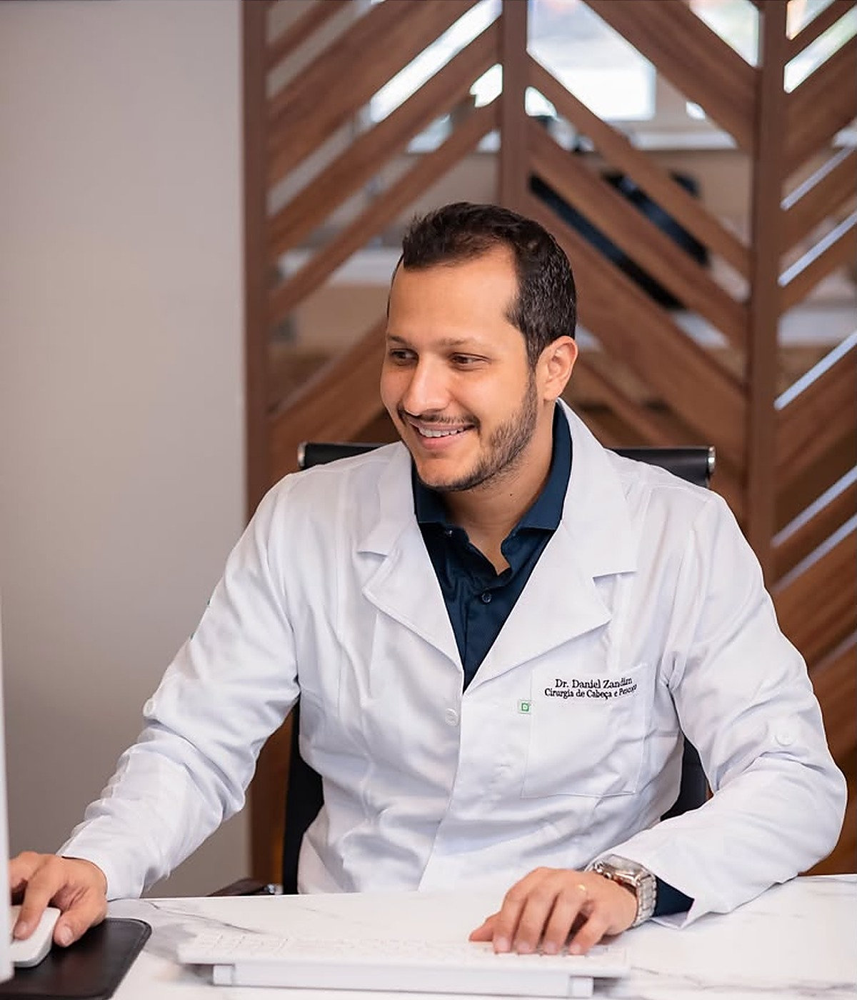

Tireoide
Avaliação de nódulos, alterações da glândula e indicação cirúrgica quando necessária.
Saiba mais →Atendimento especializado em tireoide, nódulos, cirurgias e reconstrução, com informação clara e uma relação próxima com cada paciente.

Uma abordagem completa para alterações da tireoide e da região da cabeça e do pescoço.
Avaliação de nódulos, alterações da glândula e indicação cirúrgica quando necessária.
Saiba mais →Investigação de aumentos de volume, gânglios e alterações percebidas ou encontradas em exames.
Entenda os sinais →Planejamento cuidadoso, explicação do procedimento e acompanhamento após a cirurgia.
Saiba mais →Planejamento voltado à recuperação funcional, à qualidade de vida e às necessidades individuais.
Saiba mais →Nem todo nódulo representa uma condição grave ou precisa de cirurgia. Mas alterações novas, persistentes ou em crescimento merecem avaliação.
E é por isso que a medicina começa pela escuta.
Dr. Daniel Zandim atua em Cirurgia de Cabeça e Pescoço, atendendo pacientes com alterações de tireoide, nódulos, necessidade de cirurgia e reconstrução. Seu trabalho combina conhecimento técnico, planejamento cuidadoso e uma comunicação acessível.
Formação, CRM e RQE devem ser inseridos após validação do médico.
A técnica orienta o tratamento. A escuta orienta a forma de cuidar.
Da primeira conversa ao acompanhamento, cada etapa é explicada com clareza.
Entendimento do histórico, dos sintomas e das principais dúvidas.
Análise do exame físico e definição do que realmente precisa ser investigado.
Orientação sobre acompanhamento, tratamento ou cirurgia, quando indicada.
Entenda por que observar e buscar avaliação é mais seguro do que esperar sem orientação.
Ver conteúdo →As informações são gerais e não substituem uma avaliação individual.
A especialidade avalia e trata alterações em regiões como tireoide, pescoço, glândulas salivares, boca, garganta e estruturas relacionadas, incluindo situações que podem exigir cirurgia ou reconstrução.
Não. A conduta depende das características clínicas e dos exames. Alguns casos são acompanhados; outros podem precisar de investigação adicional ou tratamento cirúrgico.
Leve os exames e relatórios que já tiver, além da lista de medicamentos em uso. Mesmo sem exames, a consulta pode iniciar a avaliação e orientar os próximos passos.
O acompanhamento é planejado conforme o procedimento e o quadro clínico, com orientações sobre recuperação, retornos e sinais que exigem contato com a equipe.
Fale com a equipe para consultar horários e orientações para o atendimento.